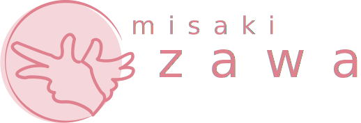
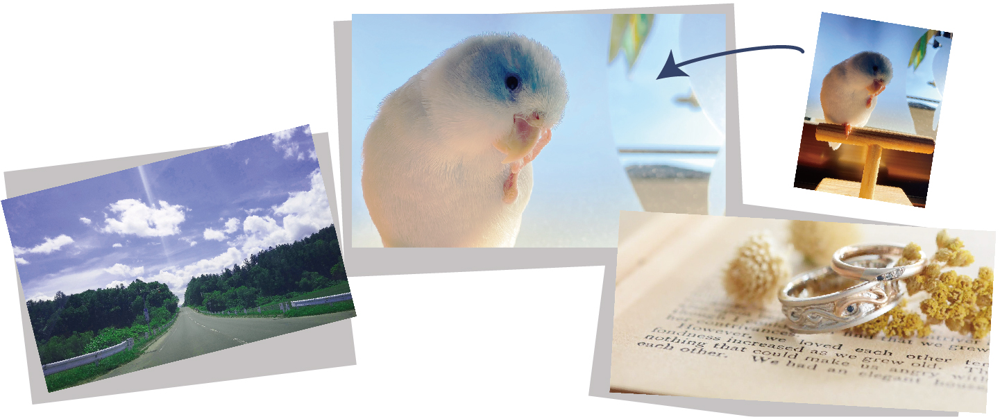
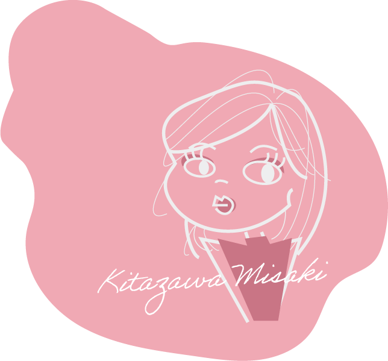

Profile
Work
Contact
Work
info
No
bag
chocolat
meguru
portfolio
portfolio
ポートフォリオサイト/合計30時間
随時更新中
My logo
自主制作/1時間
Point
マークは手話の「北」の形
耳が聞こえない方、目の見えない方、さまざまな方にとって使いやすいwebページ作りを心掛けることを表現しています。
main photo
自主制作/合計2時間

Point
自身で撮影した写真をPhotoshopで明るさなどを調整しました。
TOP…飼っているペットのマメルリハインコ
profile…前職で、原型を制作した指輪
contact…北海道旅行
illustration
自主制作/合計2時間

Point
illustratorのペンツールで作成
線の太さを変えて髪の流れを表現
カラーは彩度や明度を変えた色にし全体にまとまりを
web page
Point
ページの上に上がるボタンは、jQueryでスライドしたらフェイドインし、一番上に戻ったらフェイドアウトする仕様に。
一つのテーマごとに作品を多数制作したので、見やすいようにテーマごとにカテゴリ分けを。
お問い合わせフォームには、Googleフォームを入れているので実際にご利用いただけます。